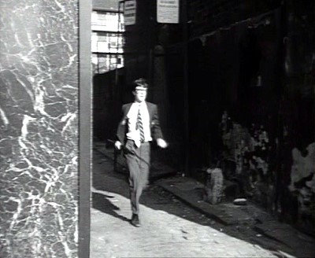
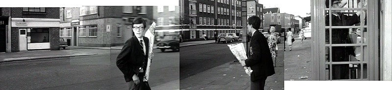
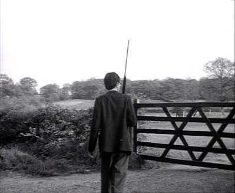
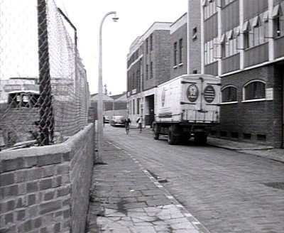
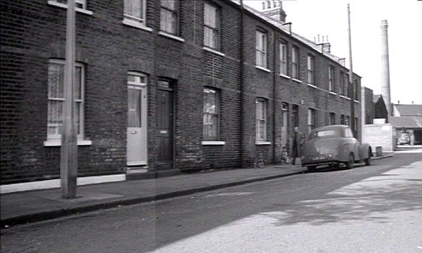
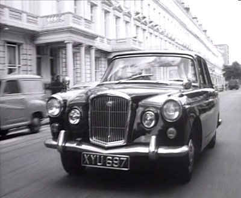

|
|
HELP FIND THE FOLLOWING LOCATIONS
PAGE 47
GIDEON’S
WAY: Boy With Gun (Jeremy Summers: May 1965):
Hoxton Street, London, N1 – Establishing shot of London Market (corner of Hoxton Street and Purcell Street, redeveloped).
(Identified by Phillip Judge, March 2024)

Dormer Mews, London, N1– Chris Kirk
(Howard Knight) is cornered by a gang of youths,
Charlie in a back lane. Mick Murphy (Roger Foss) is shot.
Doctor Kirk
(Anthony Bate) goes to the crime scene to attend to the injured
boy.
(Identified by Phillip Judge, March 2024)


Hoxton Street, London, N1 – Chris Kirk (Howard Knight)
runs into the street (from Dormer Mews, redeveloped), but has to
turn back when he sees two of the gang members talking to a police man.
(Identified by Phillip Judge, March 2024)



Bethnal
Green Road, Bethnal Green London E2 – Chris Kirk (Howard Knight) find a phone box
and calls his father
about the accidental shooting.
Identified by Thomas Gibson, May 2021

I7:
Napsbury Station (demolished) – A shocked Chris Kirk (Howard Knight) walks
along the railway
tracks with the gun,
(Identified by Victor Hall, August 2009)

N59: Ewhurst, 37 Furzehill Road, Borehamwood (demolished) – Chris Kirk (Howard Knight) leaves his house with the gun.


Pennington
Street, London E1
– He sees some lorries at a greasy spoon and hides inside one of
them.
(Identified by Andrew Chilcott, May 2021)


Netherwylde
Farm, Watling Street, Radlett – Chris Kirk (Howard Knight) finds a farm and
steals some milk it
is here he first meets Vince Kelly (Michael Craze).
(Identified by Geoff Dodd,
May 2022)



Sampson Street, London, E1 – Chris Kirk (Howard Knight) and Vince Kelly (Michael Craze) are chased past
warehouses by a policeman after their arrival in London.
(Identified by Geoff Dodd, March 2024)

Knighten Street, London, E1
– Chris Kirk (Howard Knight) and Vince Kelly (Michael Craze) are chased
past warehouses by a policeman after their arrival in London.
(Identified by Geoff Dodd, March 2024)

46 Harbinger Road, London, E14 – Finny goes
around to Tim Murphy’s (George Sewell) house.
(Identified by Jaz Wiseman, March 2024)


Westferry
Road at the junction with Napier Road and Harbinger Road, E14 – Keen’s car make a U-turn.
(Identified by Geoff Dodd, May 2022)

Wapping Lane, London, E1 – Keen and his driver patrol the docks looking for the boys (Wapping Lane junction with Prusom Street).
(Identified by Geoff Dodd, March 2024)

Randolph Avenue, London, W9 - Gideon himself decides to drive down to the wharfs.

Think you know a spot? Need a bigger image? Email me.
< Previous | Index | Avengerland | Next >
Copyright © 2024 Anthony R. McKay